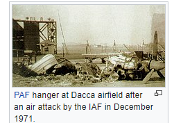
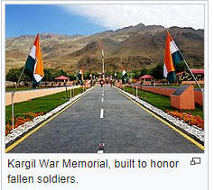

Indian Defence System
Indian Army
The Indian Army is a voluntary service, the military draft having never been imposed in India. It is one of the largest standing armies (and the largest standing volunteer army) in the world, with 1,129,900 active troops and 960,000 reserve troops.The force is headed by the Chief of Army Staff of the Indian Army, General Bipin Rawat. The highest rank in the Indian Army is Field Marshal, but it is a largely ceremonial rank and appointments are made by the President of India, on the advice of the Union Cabinet of Ministers, only in exceptional circumstances. (See Field Marshal (India)). Late Field Marshal S.H.F.J. Manekshaw and the late Field Marshal Kodandera Madappa Cariappa are the only two officers who have attained this rank.

The army has rich combat experience in diverse terrains, due to India's varied geography, and also has a distinguished history of serving in United Nations peacekeeping operations. Initially, the army's main objective was to defend the nation's frontiers. However, over the years, the army has also taken up the responsibility of providing internal security, especially in insurgent-hit Kashmir and the north-east. The Indian Army has seen military action during the First Kashmir War, Operation Polo, the Sino-Indian War, the Second Kashmir War, the Indo-Pakistani War of 1971, the Sri Lankan Civil War and the Kargil War. It has dedicated one brigade of troops to the UN's standby arrangements. Through its large, sustained troop commitments India has been praised for taking part in difficult operations for prolonged periods.[citation needed] The Indian Army has participated in several UN peacekeeping operations including those in: Cyprus, Lebanon, the Democratic Republic of the Congo, Angola, Cambodia, Vietnam, Namibia, El Salvador, Liberia, Mozambique and Somalia. The army also provided a paramedical unit to facilitate the withdrawal of the sick and wounded in the Korean War.
Doctrine, corps, field force
Indian Army Pinaka multi barrel rocket launcher
The current combat doctrine of the Indian Army is based on effectively utilising holding formations and strike formations. In the case of an attack, the holding formations would contain the enemy, and strike formations would counter-attack to neutralise enemy forces. In the case of an Indian attack, the holding formations would pin enemy forces down whilst the strike formations attack at a point of India's choosing. The Indian Army is large enough to devote several corps to the strike role. The army is also looking at enhancing its special forces capabilities. With the role of India increasing, and the need to protect India's interests on far-off shores becoming important, the Indian Army and Indian Navy are jointly planning to set up a marine brigade.
The Army's field force comprises thirteen corps, three armoured divisions, four Reorganised Army Plains Infantry Divisions (RAPID), eighteen infantry divisions and ten mountain divisions, a number of independent brigades, and requisite combat support and service support formations and units. Among the thirteen, three are "strike" corps — Mathura (I Corps), Ambala (II Corps) and Bhopal (XXI Corps). The main combat and combat support units are 62 armoured regiments, and over 350 infantry battalions and 300 artillery regiments (including two surface-to-surface missile (SSM) units). Amongst major armaments and equipment, there are nearly 4000 main battle tanks, 2000 armoured personnel carriers, 4300 artillery pieces and 200 light helicopters.
Mountain Strike Corps
India is raising a new mountain strike corps to strengthen its defence along its disputed border with China in the high reaches of the Himalayas. However, the entire XVII Corps, with its headquarters at Panagarh in West Bengal, will only be fully raised with 90,274 troops at a cost of 646.7 Billion Indian Rupees by 2018–2019 (circa US$7.3 Billion at 2018 rates). With units spread across the 4,057 kilometres (2,521 mi) Line of Actual Control (LAC) from Ladakh to Arunachal Pradesh, the corps will have two high-altitude infantry divisions (59 Div at Panagarh and 72 Div at Pathankot) with their integral units, two independent infantry brigades, two armoured brigades and the like. It will include 30 new infantry battalions and two Para-Special Forces battalions. In other words, it will have "rapid reaction force" capability to launch a counter-offensive into Tibet Autonomous Region (TAR) in the event of any Chinese attack.
Modernisation
Mechanised forces

India is re-organising its mechanised forces to achieve strategic mobility and high-volume firepower for rapid thrusts into enemy territory. At present, the Indian army has severe deficiencies in its artillery (particularly self-propelled guns) and ammunition stocks, not to mention the inability of some of its modern tanks to operate in the heat and dust of the desert regions around the international border.India proposes to progressively induct as many as 248 Arjun MBT and to develop and induct the Arjun MK-II variant, 1,657 Russian-origin T-90S main-battle tanks, apart from the ongoing upgrade of its T-72 fleet. Arjun MK-II trials had already begun in August 2013. The improved features of the MK-II version of Arjun are night vision capabilities with a thermal imaging system for detecting all kinds of missiles, Explosive Reactive Armour (ERA), mine ploughs, the ability to fire anti-tank missiles with its 120 mm main gun, an Advanced Air Defence gun capable of shooting down helicopters with a 360 degree coverage, Automatic Target Tracking (ATT) lending a greater accuracy when it comes to moving targets and superior Laser Warning and Control systems. The Indian Army will upgrade its entire Boyevaya Mashina Pekhoty-2 (BMP-2)/2K infantry combat vehicle (ICV) fleet to enhance their ability to address operational requirements. Upgrades include integration of the latest generation fire control system, twin missile launchers and commander's thermal imaging panoramic sights, anti- tank guided missiles, as well as automatic grenade launchers.
Under the Field Artillery Rationalisation Plan, the army plans to procure 3000 to 4000 pieces of artillery at a cost of US$3 billion. This includes purchasing 1580 towed, 814 mounted, 180 self-propelled wheeled, 100 self-propelled tracked and 145 ultra-light 155 mm/52 calibre artillery guns. After three years of searching and negotiations, India ordered M777 155mm howitzers from USA in September 2013.
Infantry
Indian Army soldiers during a military exercise, 2013
The Indian Army has also embarked on an infantry modernisation programme known as Futuristic Infantry Soldier As a System (F-INSAS). The infantry soldiers will be equipped with modular weapon systems that will have multiple functions. The core systems include bullet proof helmet and visor. The bullet proof helmet is an integrated assembly equipped with helmet mounted flashlight, thermal sensors and night vision device, miniature computer with audio headsets. The personal clothing of the soldier of the future would be lightweight with a bullet-proof jacket. The futuristic jacket would be waterproof, yet it would be able to breathe. The new attire will enable the troops to carry extra loads and resist the impact of nuclear, chemical and biological warfare. The new uniform will have vests with sensors to monitor the soldier's health parameters and to provide quick medical relief. The weapons sub-system is built around a multi-calibre individual weapon system with the fourth calibre attached to a grenade launcher. These include a 5.56 mm, a 7.62 mm and a new 6.8 mm under development for the first time in India.
In November 2013, the Indian Army moved a step closer to the battlefield of the future, where command networks know the precise location of every soldier and weapon, with whom generals can exchange reports, photos, data and verbal and written communications. Army headquarters called in 14 Indian companies and issued them an expression of interest (EoI) for developing a Battlefield Management System (BMS). The BMS will integrate combat units — armoured, artillery and infantry regiments, infantry battalions, helicopter flights, etc. — into a digital network that will link together all components of the future battlefield. While precise costs are still unclear, vendors competing for the contract say the army expects to pay about Rs 40,000 crore for developing and manufacturing the BMS.However, in 2015, the Indian Army decided to replace the F-INSAS program in favour of two separate projects. The new program will have two components: one arming the modern infantry soldier with the best available assault rifle, carbines and personal equipment such as the helmet and bulletproof vests, the second part is the Battlefield Management Systems (BMS).